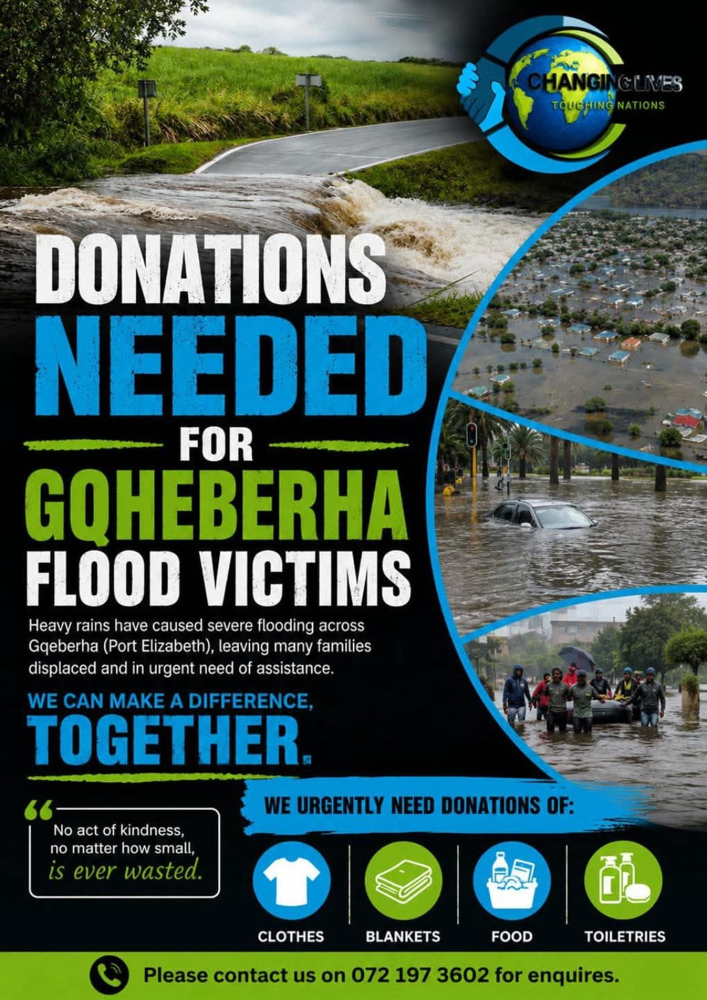
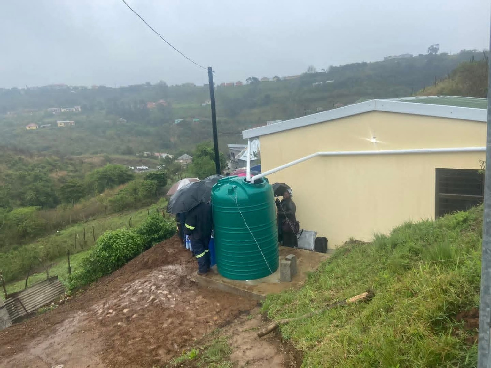
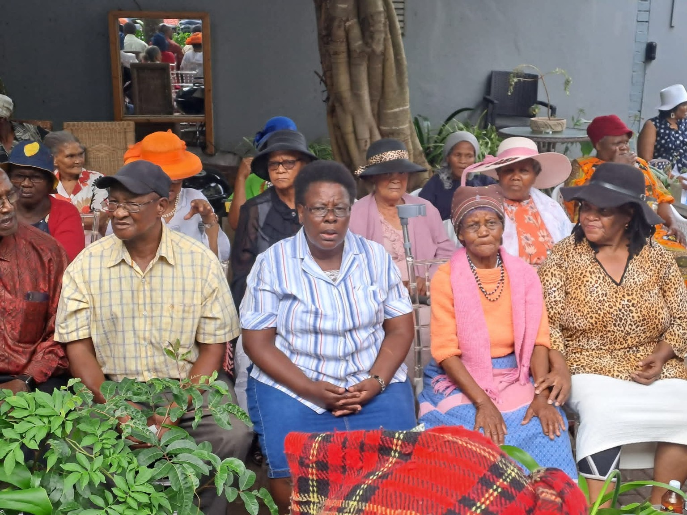
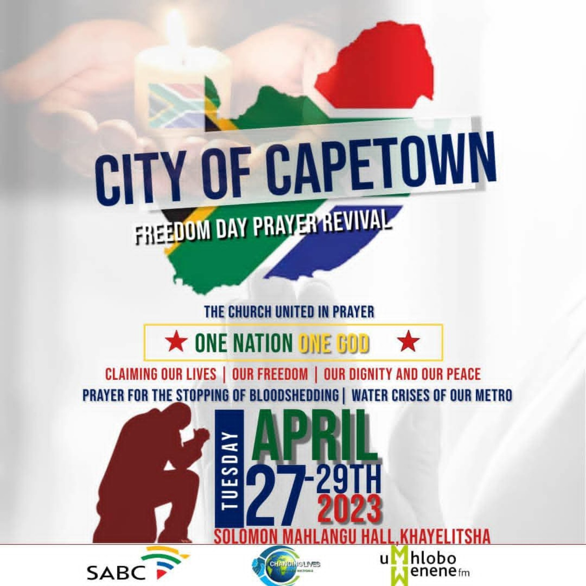
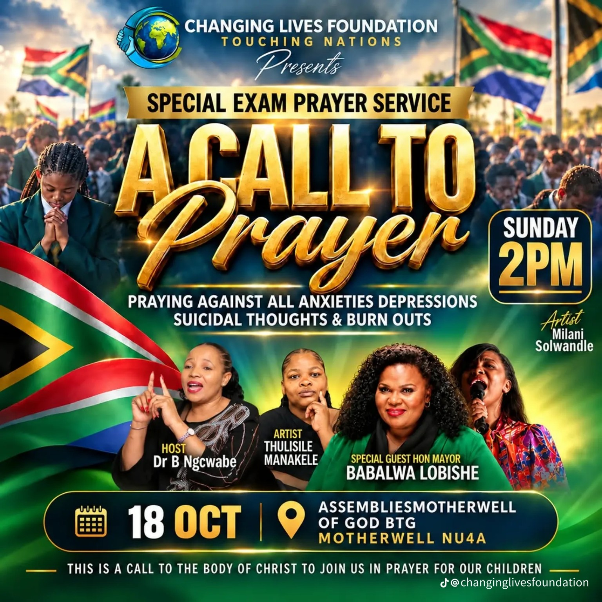
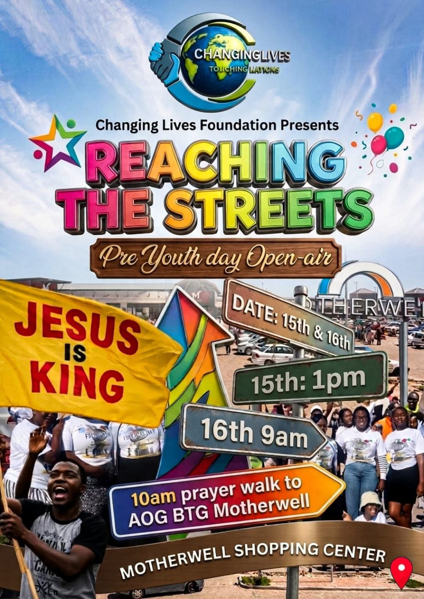
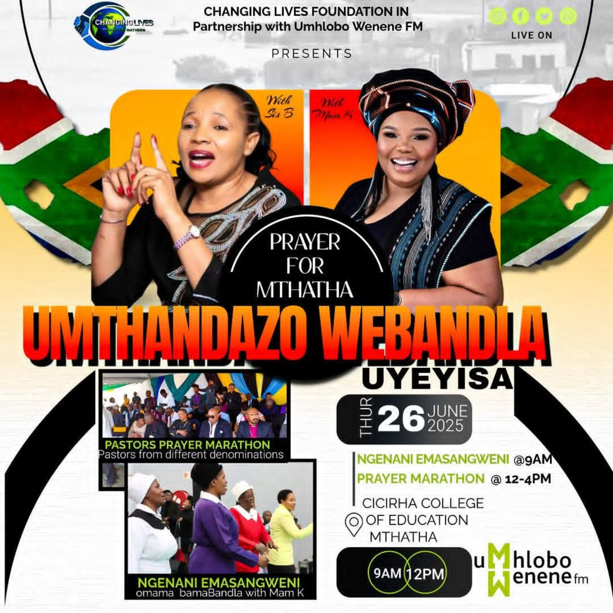
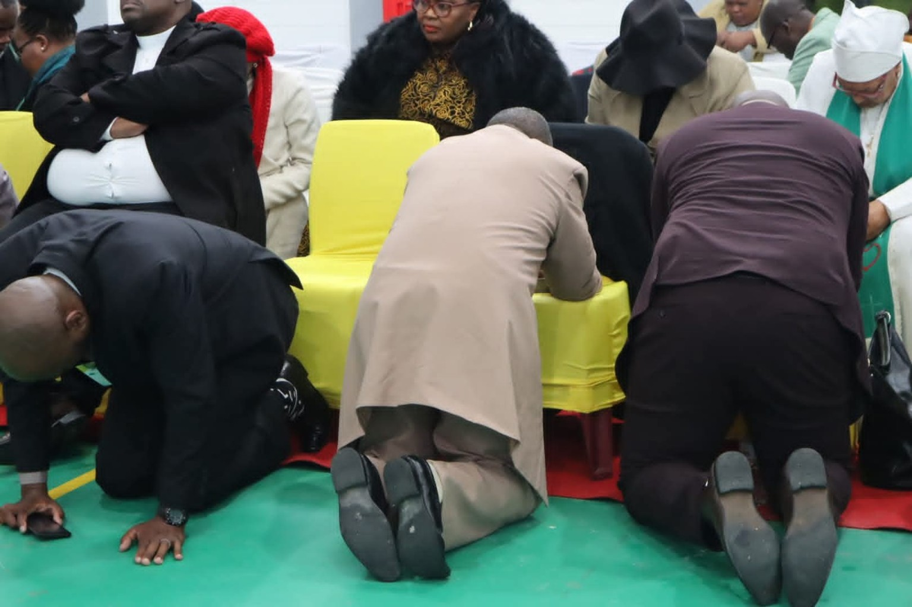

Love in Action
Behind every picture is a reason to care. Explore the people, places and programmes at the heart of Changing Lives Foundation.

Flood & disaster relief
Standing with families when the waters rise.
Flooding can leave a family without the everyday essentials that make a home feel safe. Changing Lives has appealed for clothing, blankets, food and toiletries for people affected by flooding in Gqeberha.
The appeal brings a clear, practical way for neighbours and supporters to help. It turns concern into shared action around the immediate needs of affected families.
Why it matters: A community response that connects people in need with people willing to give.

Homes that bring hope
More than a roof. A place to begin again.
A secure home matters to a family’s dignity and sense of belonging. The foundation’s housing-related outreach includes visits and work alongside local municipal and community stakeholders in Port St Johns.
The supplied photographs place this work in real communities, where practical support and prayer go hand in hand. Each home represents a family whose needs deserve to be seen.
Why it matters: Working together around the basic human need for a safe place to call home.

Honouring our elders
Making room for those who have given so much.
Changing Lives creates opportunities for older community members to gather, share fellowship and be appreciated. The foundation’s photographs show elders coming together for time, attention and prayer.
Blankets, Christmas gifts and community gatherings are part of the care described in the foundation’s work. The intention is simple: to remind older people that they remain an important part of community life.
Why it matters: Moments of companionship and appreciation that affirm the dignity of older people.

United in prayer in Cape Town
One nation. One God. A shared prayer for our cities.
The Freedom Day Prayer Revival invited the church to gather at Solomon Mahlangu Hall in Khayelitsha from 27 to 29 April 2023. Its call centred on life, freedom, dignity and peace.
The programme also called for prayer around bloodshed and the water needs of the metro. It shows how the foundation’s prayer gatherings connect faith with concerns that communities face every day.
Why it matters: Bringing people together around peace, dignity and the wellbeing of the city.
Health walks & “I SAY NO”
Moving together. Standing for a healthier community.
Walks, fun runs and health-focused gatherings make space for people to be active together. The “I SAY NO” fun run and walk in Makhanda was advertised for 14 March 2026, alongside Makhanda Youth Developers.
The campaign speaks against alcohol and drug abuse, gender-based violence, crime and bullying. It connects physical activity with a positive public message and an invitation to stand together.
Why it matters: A shared space for movement, healthy choices and community awareness.

Prayer for matrics & students
Standing beside young people as they face their exams.
Exam season can bring pressure and uncertainty for learners and their families. Changing Lives’ special exam prayer service invites the community to stand with children and students through prayer and encouragement.
The supplied “A Call to Prayer” poster names Motherwell as the venue and highlights the emotional pressures young people may face. This work expresses care for learners as whole people, with futures worth investing in.
Why it matters: Spiritual encouragement, a sense of belonging and community support around exam season.

Reaching the streets
Taking the message of hope beyond the building.
“Reaching the Streets” brings open-air outreach to the places where people already gather. The pre-Youth Day programme advertised activities at Motherwell Shopping Center and a prayer walk to Assemblies of God in Motherwell.
This approach creates a visible point of connection with young people and the wider community. It is an invitation to participate, listen and find encouragement in a familiar public space.
Why it matters: Meeting people where they are and opening a conversation around faith and hope.

Prayer for Mthatha
Different congregations. A shared concern for the city.
The “Prayer for Mthatha” programme was advertised for 26 June 2025 at Cicirha College of Education. The poster identifies a partnership with Umhlobo Wenene FM and a pastors’ prayer marathon involving different denominations.
The gathering reflects an approach that brings churches, community voices and media partners together around a common concern. Its purpose is to create space for prayer and unity across congregations.
Why it matters: Building connections across churches and partners in support of community life.

A community that prays together
Being present, sharing the burden and making room for one another.
Prayer is woven through the foundation’s wider work, from gatherings with elders to outreach with young people and families. The supplied photograph captures a moment of people praying together.
Alongside donations and organised activities, these moments express the foundation’s faith-based commitment to care: listening, encouraging and standing with people through the seasons of life.
Why it matters: A shared expression of faith, care and solidarity.